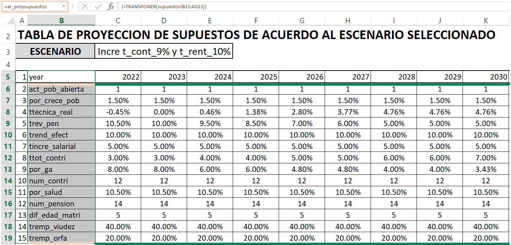
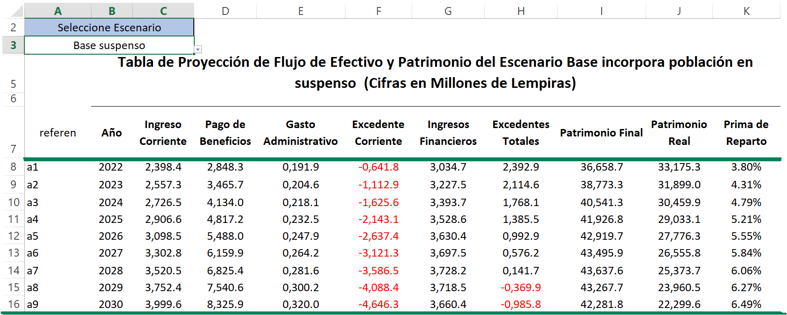
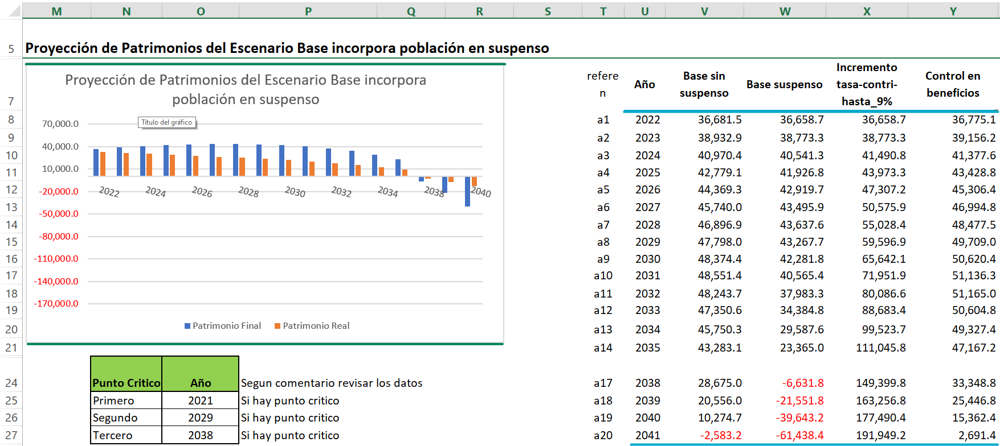
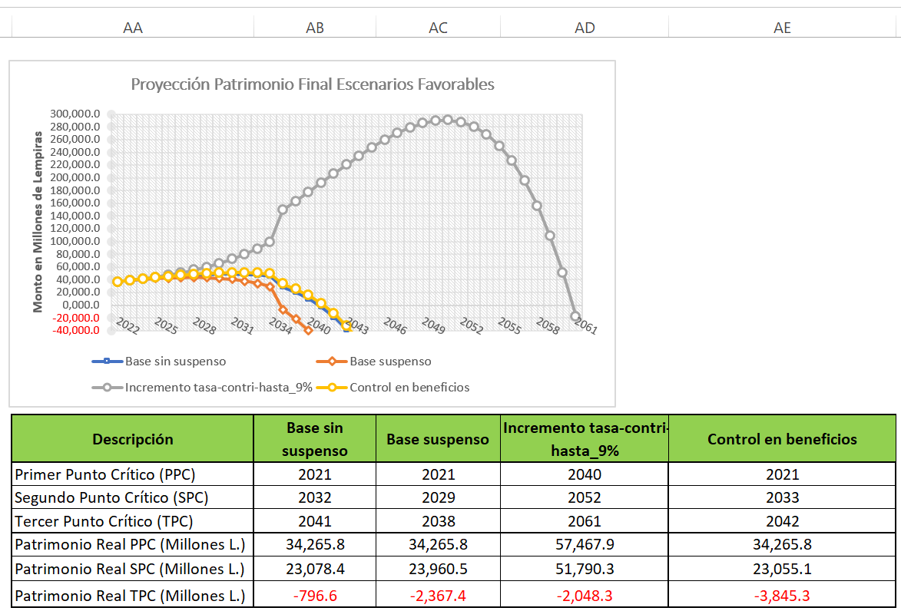

14 Supuestos
14.1 Tabla de Supuestos supuestos
14.1.1 Supuestos
En esta sección se muestra el nombre del escenario proyectado seleccionado previamente en la hoja \([Proy\ resumen]\) a esta sección se le ha llamado “escena_seleccionado”, también se cuenta con la sección llamada “activo_escena_paramet” la cual representa la forma en que se puede seleccionar el escenario a proyectar. Se toma en cuenta la fecha de valuación llamada “fval” la cual representa la fecha en la que se está realizando la proyección general. Patrimonio y reserva técnica a esta sección se le ha llamado “Pat_ini” y aquí se establece el patrimonio del régimen en el año de inicio del estudio el cual se obtiene del balance general.
14.1.2 Resumen
En esta tabla se muestra un resumen general de los supuestos que se establecieron en la hoja \([creación\ Escenarios]\) pero aquí solo se muestran los datos del tipo de escenario que se seleccione en la hoja \([Proy\ resumen]\), este muestra a detalle cada uno de los datos establecidos para cada tipo de escenario, a esta tabla se le ha llamado “Tsupuestos”.
14.2 Proyección de Supuestos [proyección supuestos]
14.2.1 Supuestos
En esta sección se muestra el nombre del escenario proyectado considerado previamente en la hoja de resumen de proyección, así mismo se encuentra una tabla que almacena el registro de todos los supuestos proyectados a lo largo de los año con los respectivos nombres de variables de cada uno de estos supuestos a esta tabla se le ha llamado “var_proysupuestos” y para cada uno de ella se muestra su valor definido a dicha tabla se le ha llamado “proy_supuestos”.

14.3 Tablas y gráficos de escenarios
Aquí se muestra un resumen de la proyección de flujo de efectivo y patrimonio por cada escenario planteado, se muestran graficas de los resultados relevantes para cada análisis, así mismo se hacen comparativos con otro tipo de escenarios que se establecieron en este estudio. Cada uno de ellos los detallamos a continuación:
14.3.1 Tabla de proyección de flujo de efectivo y patrimonio
En esta sección se establece un condensado de aquellos valores relevantes y de gran importancia para la proyección de flujo de efectivos
Ingreso Corriente: son los ingresos por contribuciones de hombres y mujeres cotizantes llamado \([Ing\_oper]\) dicho valor lo encontramos en la tabla “Talmacen_proy” ubicada en la hoja \([Almacén\ Proyecciones]\) por cada escenario.
Pago de beneficios: son los gastos de operación sin tomar en cuenta los gastos administrativos, llamado monto total de gastos por pagos de beneficios. Dado de la siguiente manera
Donde:
\({pbenef}_j\) = pago de beneficios en el año j.
\({gas\_oper}_j\) = gastos de operación en el año j.
\({Gadmin}_j\) = gastos administrativos en el año j.
Gasto administrativo: corresponde a aquellos gastos en los que incurre el régimen para el funcionamiento del mismo este parámetro es llamado Gadmin.
Excedente corriente: es la utilidad operativa, se calcula mediante la diferencia del ingreso corriente con el pago de beneficios y el gasto administrativo.
Donde:
\({uti\_oper}_j\) = utilidad operativa en el año j.
\({gas\_oper}_j\) = gastos de operación en el año j.
\({Ing\_oper}_j\) = ingreso corriente en el año j.
Ingreso Financiero: Son los ingresos que se perciben por inversiones llamado [IngFin] dicho valor lo encontramos en la tabla “Talmacen_proy” ubicada en la hoja \([Almacén Proyecciones]\) por cada escenario.
Excedentes totales: corresponde a la suma de los ingresos financieros y el excedente corriente, este es llamado también utilidad total \([uti\_tot]\).

14.3.2 Proyección de patrimonios del escenario utilizando supuestos vigentes
En esta sección se muestra un gráfico de barras del patrimonio final y real por cada escenario seleccionado previamente, así como los puntos críticos calculados. Este resumen nos permite tener un comparativo de valores importantes específicamente el Patrimonio a fin del año j para cada escenario planteado y proyectado a lo largo de este análisis.

Posteriormente en base a ese resumen de patrimonios finales para aquellos escenarios de mayor importancia o relevancia dentro del análisis se plantea un gráfico que muestra el comportamiento de este flujo de efectivo a lo largo de los años proyectados así como el resumen global de los años en que se establecen los puntos críticos del régimen y sus respectivos valores por cada escenario planteado previamente.
